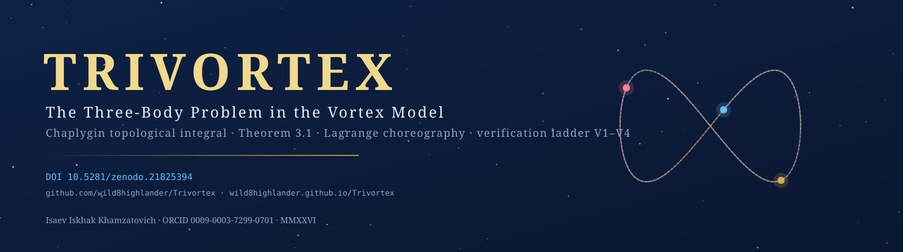
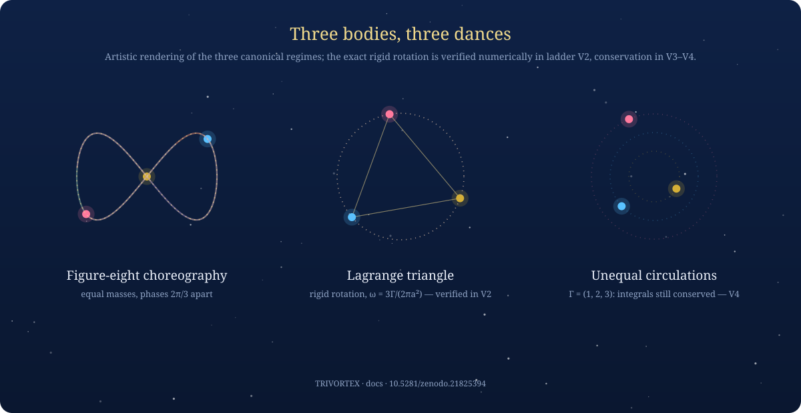

TRIVORTEX is the working title of a research document that studies the three-body (and N-body) problem through a vortex model with a Chaplygin topological integral: a closed-form rotating solution (Theorem 3.1), an interactive 22-section implementation, real-system presets, and an independent four-check verification ladder.
The document in 60 seconds
Three gravitational or vortex bodies in mutual interaction form the oldest unsolved
problem of celestial mechanics: after Poincaré, no general closed-form solution can
exist in the sense of the prize problem, and the long-term behaviour of generic
configurations is chaotic. TRIVORTEX approaches the problem from the vortex side:
bodies are represented by vortices with topological charges, the dynamics are built
on a Hofstadter-type Hamiltonian with N vortices, and the conserved quantity
binding the gauge flux to the rotation is the Chaplygin topological
integral C_Ch = r²(θ̇ − q·A_θ). Within this model the document
proves and verifies a Lagrange-type closed form — Theorem 3.1 —
in which three vortices keep an exact equilateral choreography while rotating with
frequency ω = (2π/T)·e^(C_Ch/π).
sections of the core document: Hamiltonian, analytic solution, spectral statistics, quantum version, report engine — the full map.
language mirrors of the same physics:
trivortex_core.py (EN), _ru.py (RU), _en.py
(console-EN), each ~2 400 lines.
verification checks passing: choreography, Lagrange rotation, invariants, robustness — V1–V4.
real astronomical presets wired into the code: Sun–Earth–Moon, α Centauri, Pluto–Charon–Nix — details.
seamless orbital animations (GIF + MP4): the Theorem 3.1 breathing ring, the Chenciner–Montgomery figure eight, the Lagrange triangle, laser station-keeping at L4 — physics + reproduction.
monograph renditions in the reading room: 28 typeset PDFs + 28 editable DOCX — Russian and English as separate documents; the publications page.
Why «Trivortex»
The working title TRIVORTEX compresses the two anchors of
the study into one word: tri — the three bodies of the classical problem,
vortex — the vortex representation that makes the problem tractable.
The repository keeps its historical name Trivortex and its
DOI infrastructure; version 1.0.0 is the first public release
of the complete program.

Headline results
| Claim | Status | Where |
|---|---|---|
Theorem 3.1 — closed form r_k(t), θ_k(t) with exact 2π/3
choreography and periodicity | verified (V1, residuals ≤ 1e-12) | Theorem 3.1 page |
| Rigid rotation of the Lagrange triangle at ω = 3Γ/(2πa²) | verified (V2, shape ≤ 1e-10, ω ≤ 1e-6) | Verification page |
| Conservation of H, P, Q, I (equal and unequal circulations) | verified (V3–V4, drift ≤ 1e-10) | Verification page |
| Chaplygin integral C_Ch — recorded diagnostic along the closed form | recorded (window-dependent by construction) | Honesty notes |
Quick start
git clone https://github.com/wild8highlander/Trivortex.git
cd Trivortex
pip install numpy scipy matplotlib mpmath
# the interactive document (menu with 15 modes)
python3 code/trivortex_core_en.py
# the independent verification ladder
python3 verification/trivortex/python/verify.py --preset quickAbstract / Аннотация
EN. TRIVORTEX studies the three-body (and N-body) problem in a vortex formulation with a Chaplygin topological integral. The core document implements a Hofstadter-type Hamiltonian with N vortices, derives a Lagrange-type closed-form rotating solution (Theorem 3.1), couples it to spectral statistics, quantum-topological observables and real astronomical presets, and accompanies everything with a report engine (TXT/MD/HTML/CSV/JSON/DOCX/PDF). An independent verification ladder re-derives and certifies the choreography, the rigid rotation frequency and the conservation laws.
RU. «Тривортекс» — рабочее название документа, исследующего задачу трёх (и N) тел в вихревой формулировке с топологическим интегралом Чаплыгина: гамильтониан Хофштадтера с N вихрями, замкненная лагранжева форма вращения (теорема 3.1), спектральная статистика, квантово-топологические наблюдаемые, пресеты реальных систем и независимая лестница верификации V1–V4.